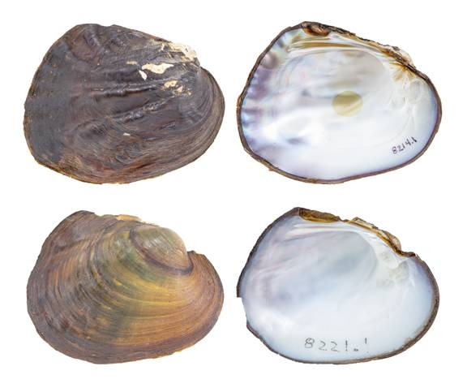

Amblema plicata (Say 1817)
Threeridge

Amblema plicata – top image, Angelina River [Neches River drainage], length 76.0 mm; bottom image, Brazos River [Brazos River drainage], length 62.6 mm, TAMU-NRI 8214 and 8221.
Identification
Shell structure: thick, moderately compressed to inflated.
Shell outline: suboval, subquadrate, subrhomboidal.
Posterior ridge: low, rounded, and often obscure due to sculpturing.
Shell color: dark green or yellowish-green in smaller individuals, tan, brown or black in larger individuals; surface dull to subglossy.
Rays: absent or faint green rays.
Shell texture: large plications across much of the shell, but some populations may only present faint sculpturing; posterior slope may have plications.
Umbo: somewhat low to high, broad, elevated above the hinge line; umbo cavity deep.
Umbo sculpture: irregular, well-marked ridges, nodular where they cross the posterior ridge.
Pseudocardinal teeth: large, triangular, erect, and rough, 2 divergent teeth in left valve and 1 in right valve, may present an accessory denticle anteriorly.
Lateral teeth: moderately long, thick, straight to slightly curved, slightly serrated, 2 in left valve, 1 in right valve.
Interdentum: short, narrow to wide.
Nacre: white to bluish white, occasionally with pink or purple tint posteriorly; some individuals may show brassy blotches.
Other: not sexually dimorphic.
General range
Mississippi River basin, Gulf Coastal drainages from west Texas to the panhandle of Florida, and parts of the Great Lakes and Hudson Bay basins.
Habitat
Streams, but not headwaters, to rivers, oxbows, lakes, reservoirs, and canals. Most often occurs in stable habitats where environmental impacts are infrequent and potential for dewatering and bed mobility is low.
Legal conservation status